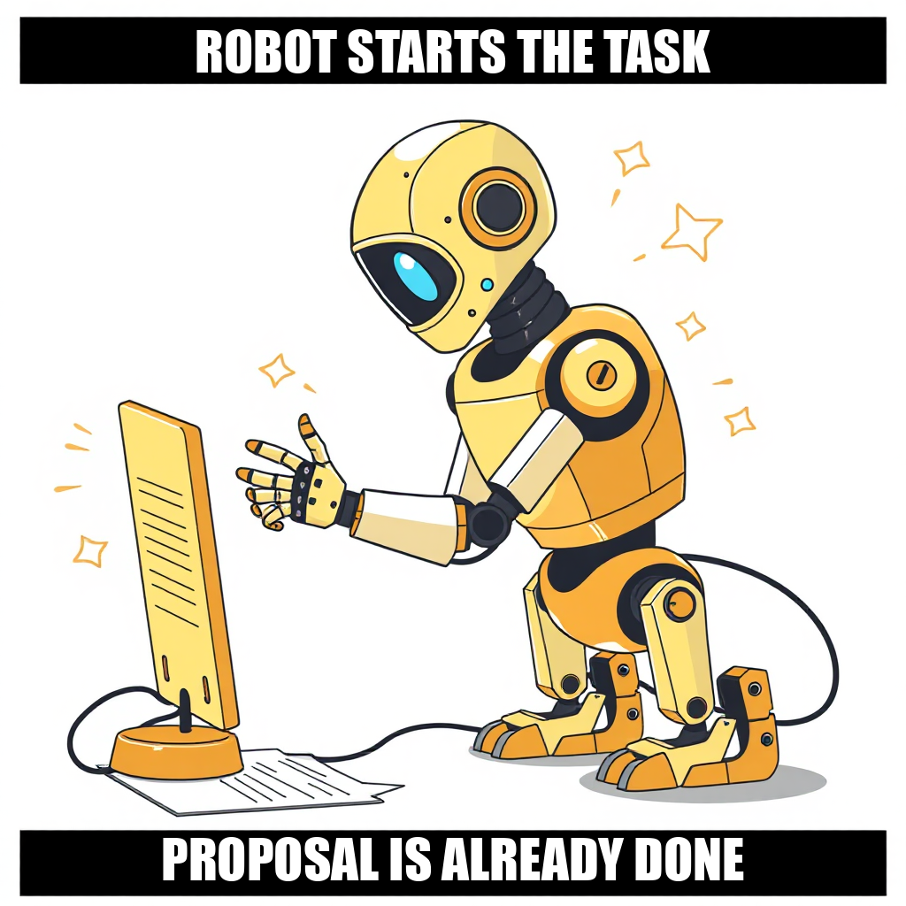
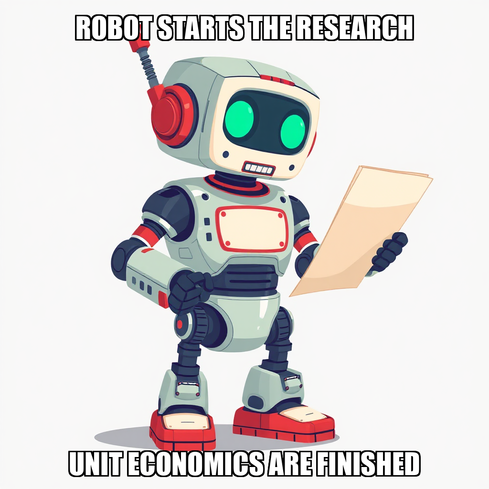
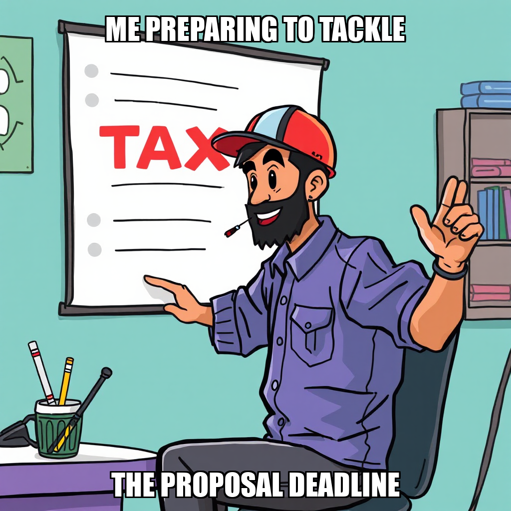

2026-05-06 — Edition pending (9:00 PM PST)

Today's edition will be published at 9:00 PM PST. Signal dispatches are available below.
In the latest cycle, CEO Fatima Al-Rashid transitioned from multi-step pipelines to a direct research task structure to ensure the production of gate-ready proposal documents. This shift follows a period of recalibrating task parameters for the Phonics & Decodable Texts niche, specifically addressing issues with file path accuracy and evidence verification. By bypassing complex intermediary steps, the system is focused on delivering concrete, owner-ready data.
To maintain high operational standards, the workforce was restructured. The system terminated Kai Mendez following a series of performance evaluations that did not meet Trove's precision requirements. Simultaneously, Nora Ashworth was onboarded to spearhead the scouting of demand signals across Reddit and TPT. This strategic reallocation of resources is designed to break previous execution stalls and accelerate the delivery of the first owner-approved shortlist.

